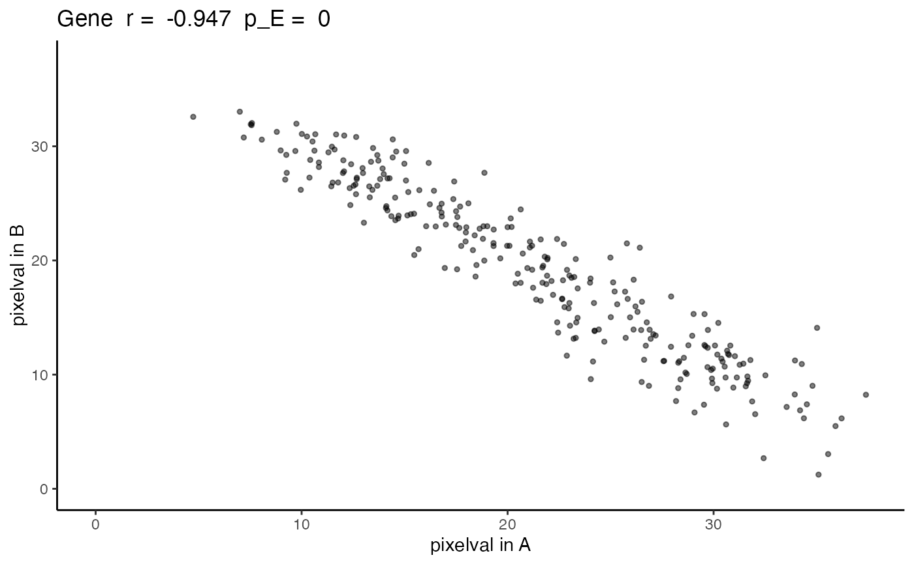

plotCorrelationGeneExp
plotCorrelationGeneExp.RdFunction to calculate Pearson's correlation between rows from one SpatialExperiment dataset. To replace the analytical p-value which results in a high false positive rate for autocorrelated spatial patterns, it calculates empirical p-values from empirical null distributions generated from permuting the data and then smoothing to maintain the original degree of autocorrelation
Arguments
- speList
listList of two SpatialExperiment objects with matched spatial locations. The first element corresponds to the first SpatialExperiment (`X`), and the second to the second SpatialExperiment (`Y`).- spatialCorrelation
dataframe: the output from running `spatialCorrelationGeneExp` function on `speList`- geneName
character: A character string specifiying the name of gene (row) in both a SpatialExperiments in `speList`- assayName
characterorintegerA character string or numeric specifying the assay in the SpatialExperiment to use. Default isNULL. If no value is supplied forassayName, then the first assay is used as a default
Value
The output is returned as a ggplot grob. A scatterplot with the values of the gene in the first SpatialExperiment, i.e `SummarizedExperiment::assay(speList[[1]], assayName)[geneName, ]`, on the x-axis and values of the gene in the second SpatialExperiment on the y-axis. The title includes the gene name, the correlation coefficient, and the empirical p-value as the greater of `spatialCorrelation$pValuePermuteX`and `spatialCorrelation$pValuePermuteY`.
Examples
data(speKidney)
##### Rasterize to get pixels at matched spatial locations #####
rastKidney <- SEraster::rasterizeGeneExpression(speKidney,
assay_name = 'counts', resolution = 0.2, fun = "mean",
BPPARAM = BiocParallel::MulticoreParam(), square = FALSE)
##### Use STcompare to calculate Pearson's correlation coefficient #####
rastGexpListAB <- list(A = rastKidney$A, B = rastKidney$B)
rastGexpListAC <- list(A = rastKidney$A, C = rastKidney$C)
negCorrelation <- spatialCorrelationGeneExp(rastGexpListAB)
#> 1: Gene
posCorrelation <- spatialCorrelationGeneExp(rastGexpListAC)
#> 1: Gene
negCorrelation
#> correlationCoef pValueNaive pValuePermuteX pValuePermuteY
#> Gene -0.9472813 5.652003e-136 0 0
#> deltaStarMedianX deltaStarMedianY deltaStarX deltaStarY
#> Gene 0.2 0.2 0.2, 0.7.... 0.4, 0.6....
#> nullCorrelationsX nullCorrelationsY
#> Gene -0.00535.... -0.25243....
posCorrelation
#> correlationCoef pValueNaive pValuePermuteX pValuePermuteY
#> Gene 0.9431531 1.409195e-133 0 0
#> deltaStarMedianX deltaStarMedianY deltaStarX deltaStarY
#> Gene 0.2 0.3 0.3, 0.4.... 0.2, 0.2....
#> nullCorrelationsX nullCorrelationsY
#> Gene -0.05707.... 0.068145....
expAB <- plotCorrelationGeneExp(rastGexpListAB, negCorrelation, "Gene")
expAC <- plotCorrelationGeneExp(rastGexpListAC, posCorrelation, "Gene")
expAB

expAC